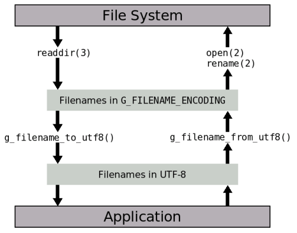

Character Set Conversions
Character Set Conversions
The g_convert() family of function wraps the functionality of
iconv(). In addition to pure character set conversions, GLib has functions
to deal with the extra complications of encodings for file names.
File Name Encodings
Historically, UNIX has not had a defined encoding for file names: a file name is valid as long as it does not have path separators in it (“/”). However, displaying file names may require conversion: from the character set in which they were created, to the character set in which the application operates. Consider the Spanish file name “Presentación.sxi”. If the application which created it uses ISO-8859-1 for its encoding,
Character: P r e s e n t a c i ó n . s x i
Hex code: 50 72 65 73 65 6e 74 61 63 69 f3 6e 2e 73 78 69
However, if the application use UTF-8, the actual file name on disk would look like this:
Character: P r e s e n t a c i ó n . s x i
Hex code: 50 72 65 73 65 6e 74 61 63 69 c3 b3 6e 2e 73 78 69
Glib uses UTF-8 for its strings, and GUI toolkits like GTK that use GLib do
the same thing. If you get a file name from the file system, for example,
from readdir() or from g_dir_read_name(), and you wish to
display the file name to the user, you will need to convert it into UTF-8.
The opposite case is when the user types the name of a file they wish to
save: the toolkit will give you that string in UTF-8 encoding, and you will
need to convert it to the character set used for file names before you can
create the file with open() or fopen().
By default, GLib assumes that file names on disk are in UTF-8 encoding. This
is a valid assumption for file systems which were created relatively
recently: most applications use UTF-8 encoding for their strings, and that
is also what they use for the file names they create. However, older file
systems may still contain file names created in “older” encodings, such as
ISO-8859-1. In this case, for compatibility reasons, you may want to
instruct GLib to use that particular encoding for file names rather than
UTF-8. You can do this by specifying the encoding for file names in the
G_FILENAME_ENCODING environment variable. For example, if your installation
uses ISO-8859-1 for file names, you can put this in your ~/.profile:
export G_FILENAME_ENCODING=ISO-8859-1
GLib provides the functions g_filename_to_utf8() and
g_filename_from_utf8() to perform the necessary conversions. These
functions convert file names from the encoding specified in
G_FILENAME_ENCODING to UTF-8 and vice-versa. This diagram illustrates how
these functions are used to convert between UTF-8 and the encoding for file
names in the file system.
Conversion between file name encodings

Checklist for Application Writers
This section is a practical summary of the detailed things to do to make sure your applications process file name encodings correctly.
- If you get a file name from the file system from a function such as
readdir()orgtk_file_chooser_get_filename(), you do not need to do any conversion to pass that file name to functions likeopen(),rename(), orfopen()— those are “raw” file names which the file system understands. - If you need to display a file name, convert it to UTF-8 first by using
g_filename_to_utf8(). If conversion fails, display a string like “Unknown file name”. Do not convert this string back into the encoding used for file names if you wish to pass it to the file system; use the original file name instead. - For example, the document window of a word processor could display
“Unknown file name” in its title bar but still let the user save the
file, as it would keep the raw file name internally. This can happen if
the user has not set the
G_FILENAME_ENCODINGenvironment variable even though he has files whose names are not encoded in UTF-8. - If your user interface lets the user type a file name for saving or
renaming, convert it to the encoding used for file names in the file
system by using
g_filename_from_utf8(). Pass the converted file name to functions likefopen(). If conversion fails, ask the user to enter a different file name. This can happen if the user types Japanese characters whenG_FILENAME_ENCODINGis set to ISO-8859-1, for example.